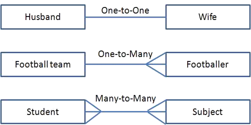
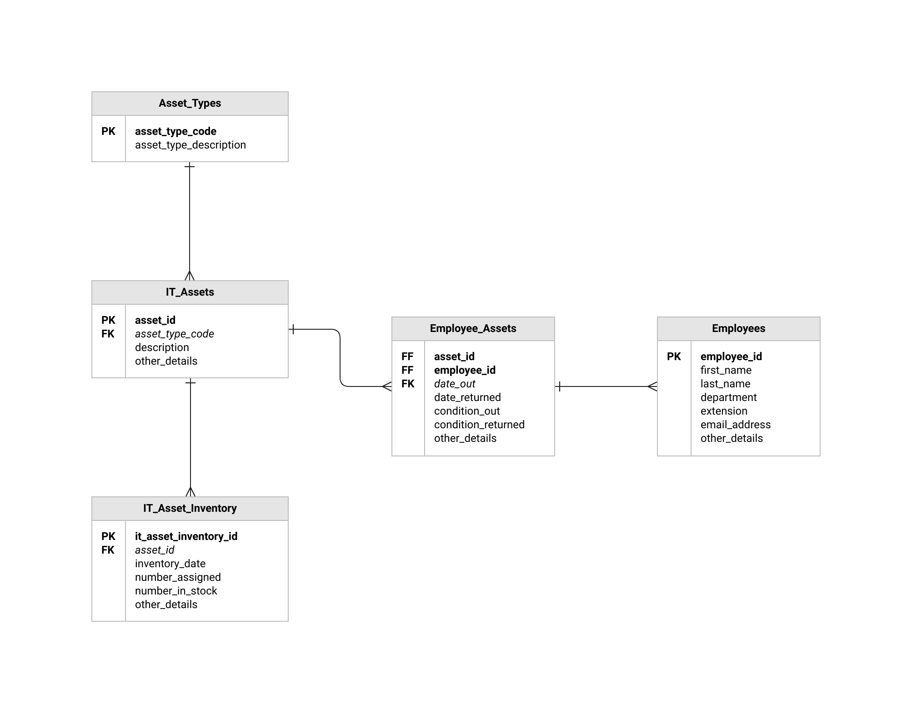
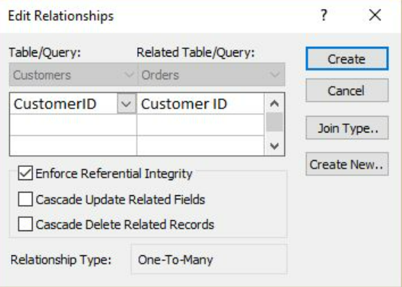

Database
Data in a single table is known as a flat file database.
Data stored over multiple tables, joined via relationships is known as a relational database.
The process of converting a flat file database into a relational data base is known as normalization.
3 main relationships
Primary key: a field that contains the unique identifier for a record
Foreign key: a field in a table that refers to the primary key in another table
-
One-to-one
A one-to-one relationship is when each record in one table only connects to one record in another table. For ex- Think of a "Person"
and their "Social Security Number." Each person has a one-to-one relationship with their Social Security Number, and vice versa.
Each SSN corresponds to one person, and each person has one SSN.
-
One-to-many
A one-to-many relationship is when each record in one table can connect to many (zero or more) records in another table.
For ex- Consider a "Department" and "Employees." One department can have many employees, but each employee belongs
to only one department. So, one department to many employees, and each employee to one department.
-
Many-to-many
In a many-to-many relationship, each record in one table can connect to many records in another table but each record in the
other table can also connect to many records in the original table. For ex- “Students" and "Courses."
A student can enroll
in multiple courses, and a course can have multiple students.
This creates a many-to-many relationship.

NOTE- In access and most dbms software, a many to many relationship is NOT possible to create. This is why we use
a junction or link table.
Table 1: Students
- Fields: StudentID (Primary Key), StudentName, etc.
Table 2: Courses
- Fields: CourseID (Primary Key), CourseName, etc.
Link Table: Enrollment
-
Fields: EnrollmentID (Primary Key), StudentID (Foreign Key referencing Students table),
CourseID (Foreign Key referencing Courses table), and any additional fields like EnrollmentDate.
Type of ERD
Physical- Detailed, includes technical specifics
Conceptual- High-level, focuses on entities, relationships, and major attributes without technical details.
Logical- Intermediate level, refines the conceptual model with more details like keys and normalization, guiding the
actual database design

Referential Integrity
Referential Integrity ensures that relationships between tables remain valid. Here's how it works:
It often includes actions on update or delete, specifying what should happen if the primary key values are modified or if records
are deleted in the referenced table. Common actions are restricting updates/deletes, cascading changes, setting null values,
or setting default values.
If you have a database about Authors and Books in a library and you delete one of the authors from the table, the
corresponding book in the "Books" table might be left hanging with an orphaned Author, referencing an author that no longer exists.
This can lead to inconsistency. With referential integrity enabled, the database software would prevent you from performing such actions.
Enabling the “Cascade Delete Related Records” option would allow you to delete that field and will automatically remove any corresponding
fields in the other tables.

NORMALIZATION
First normal form:
Data in first normal form (1NF) must satisfy the following criteria:
- all fields must contain atomic data
- there must be no repeating groups of data
- there must be a unique key
Practically
Remove Duplicate Rows: In excel, go to data, remove duplicates
Atomic Values: The easiest way to split data is to go to Data-->Text to columns and seperate by space
If a formula is required, one can make use of =mid and =find.
| A | B |
| 1 | Fullname | firstname |
| 2 | John Doe | John |
=MID(A2,1,FIND(" ",A2)-1)
This formula works by using =mid to isolate the first name. A2 is our target cell
we use 1 so that our name starts from the first letter, we then use the =find formula
to locate the space in the name. We use -1 so that the space is not included in the final output.
| A | B |
| 1 | Fullname | lastname |
| 2 | John Doe | Doe |
=MID(A2,FIND(" ",A2)+1,20)
This formula works on the same basis, except the start and endpoint functions are reversed. The formula
first finds the space and starts from there. The end point has been set as 20 because most names will not be
longer than 20 characters. The +1 is so that there isn't a space before the name.
Second normal form
Data in second normal form (2NF) must have no partial key dependencies. This means that no non-key fields can be dependent
upon part of a primary key. In simple terms, a field that is completely related to another,
should be separated into
another table.
Third normal form
Data in third normal form 3NF must have no non key dependencies. This means that there should be no fields that are dependent
upon another field that is not a primary key. In simpler words, all fields should be dependent on the primary key.
Data dictionary
metadata (information) about the database
Data in a data dictionary:
- field names to identify each field
- data types, such as text, integer, date/time
- field size, such as the length of a text field or the maximum value of a numeric field
- format of fields
- default values which are values a field is set to be initially when a new record is created
- primary keys, compound keys and foreign keys
- validation rules that restrict data entry for that field